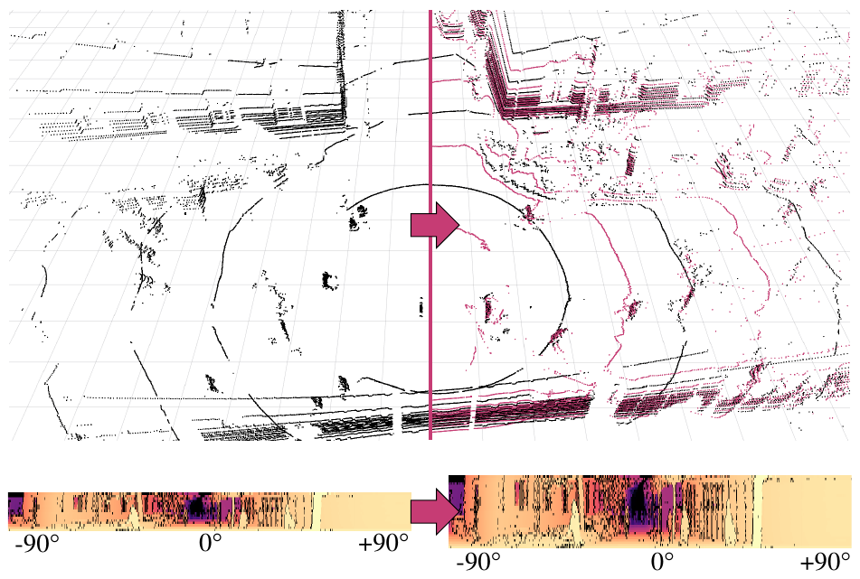
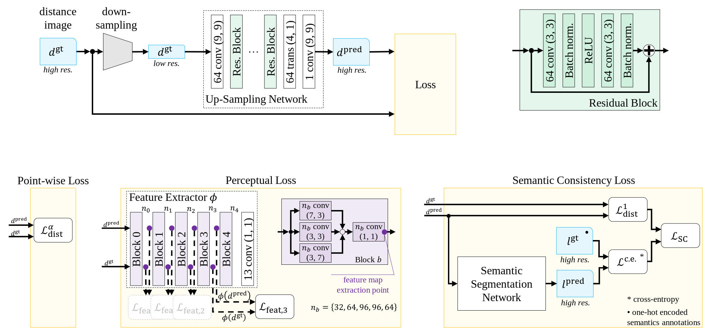
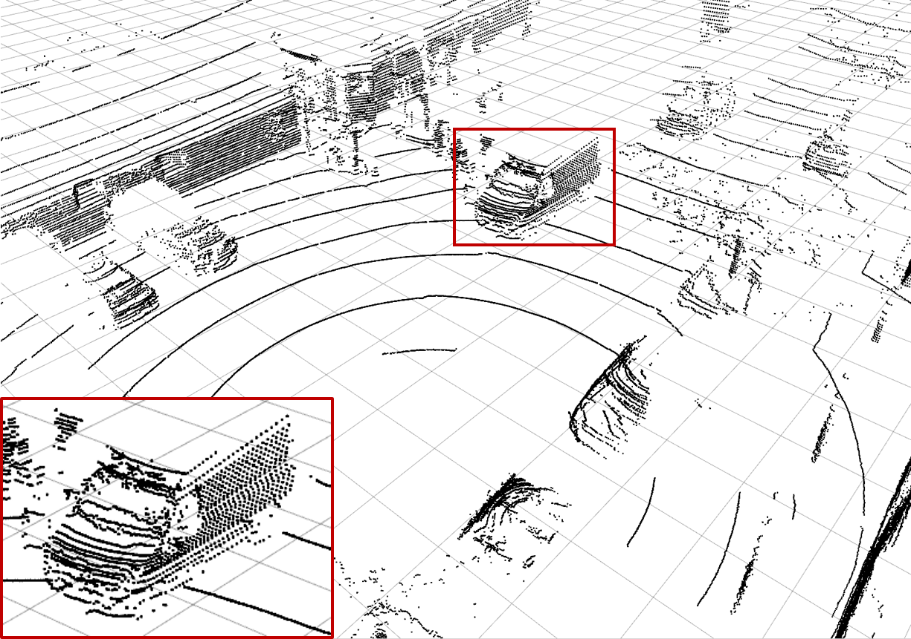
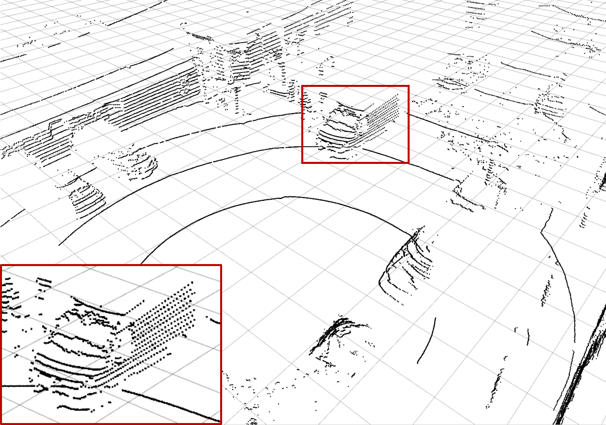
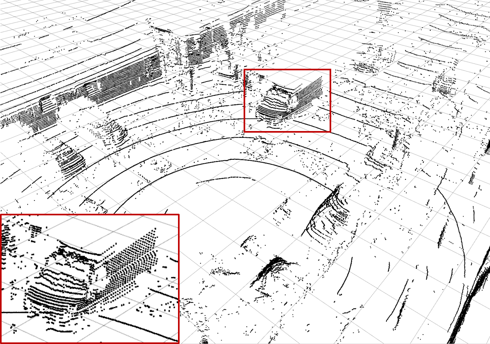
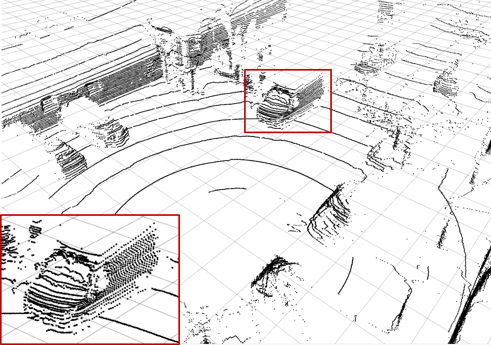
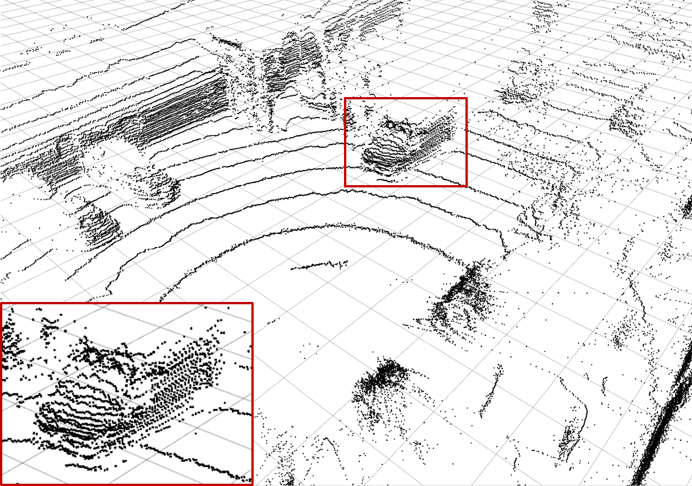
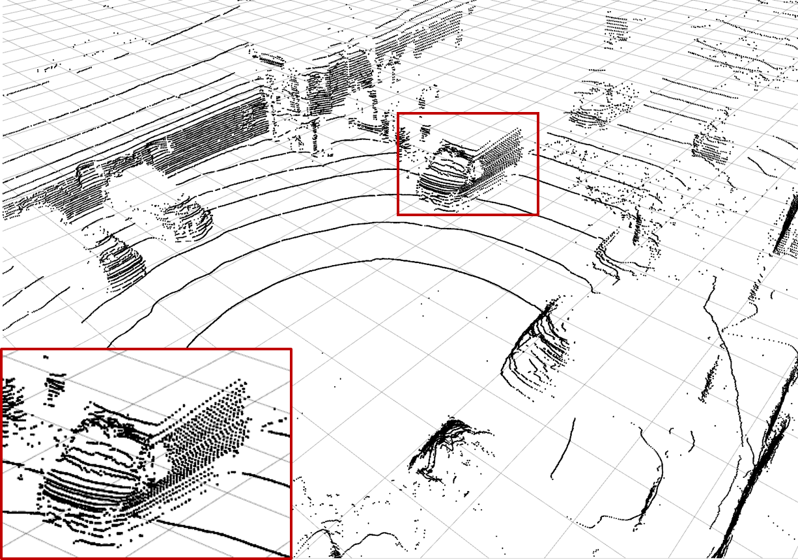
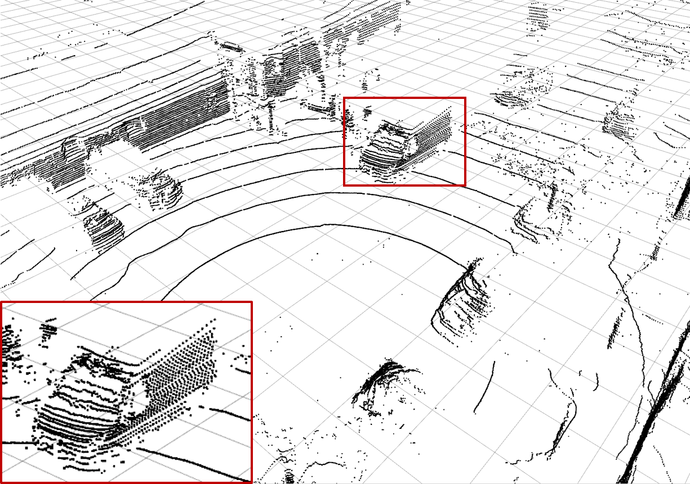
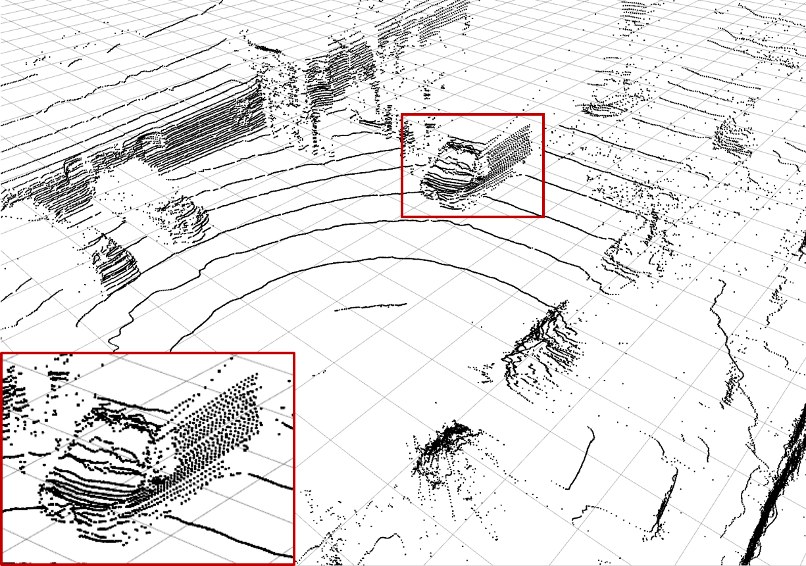

| Larissa T. Triess1,2 | David Peter1 | Christoph B. Rist1 | Markus Enzweiler1 | J. Marius Zöllner2,3 |
|
1Daimler AG, R&D Stuttgart (Germany) |
2Karlsruhe Institute of Technology Karlsruhe (Germany) |
3Research Center for Information Technology Karlsruhe (Germany) |
| In 2019 IEEE Intelligent Vehicles Symposium (IV) |
| [Paper] [Poster] |
|  |
| Up-sampled point cloud: The top left shows a three dimensional point cloud recorded by a Velodyne VLP32 LiDAR scanner, with every other layer removed. On the bottom left, the corresponding cylindrical projection, the LiDAR distance image, is depicted in range −90◦ < θ < +90◦. The color coding depicts closer objects in brighter colors and marks missing measurements in black. For better visibility, the vertical pixel size is five times the actual size. The right side shows the same scene synthesized with our approach. It is up-sampled with a factor of two and every other layer is colored in violet in the top image. The scene shows an urban street crossing with cars, pedestrians, bicycles, buildings and trees. |
|
This paper presents a novel CNN-based approach for synthesizing high-resolution LiDAR point cloud data.
Our approach generates semantically and perceptually realistic results with guidance from specialized loss-functions.
First, we utilize a modified per-point loss that addresses missing LiDAR point measurements.
Second, we align the quality of our generated output with real-world sensor data by applying a perceptual loss.
In large-scale experiments on real-world datasets, we evaluate both the geometric accuracy and semantic segmentation performance using our generated data vs. ground truth. In a mean opinion score testing we further assess the perceptual quality of our generated point clouds. Our results demonstrate a significant quantitative and qualitative improvement in both geometry and semantics over traditional non CNN-based up-sampling methods. |
@inproceedings{triess2019iv,
title = {{CNN-based synthesis of realistic high-resolution LiDAR data}},
author = {
Triess, Larissa T. and
Peter, David and
Rist, Christoph B. and
Enzweiler, Markus and
Z\"ollner, J. Marius
},
booktitle = {Proc. IEEE Intelligent Vehicles Symposium (IV)},
year = {2019},
pages = {1512-1519},
}| Our main contributions are three-fold: |
|  |
| Overview on the proposed architecture: It is divided into three separate networks. The top shows the overall architecture with a detailed view on the residual block (green). The input to the network is a down-sampled distance image of size L/2 × W with information about the missing measurements. The residual up-sampling network outputs an up-sampled distance image of size L × W with in-network up-scaling. Both distance images are inputs to the loss (yellow). The bottom shows the three different loss functions under consideration (only one is used at a time). |
|
A LiDAR scanner rotates and each module periodically measures the distance \(r_{ij}\) at its current orientation.
This can be described by an elevation angle \(\theta_i\) and an azimuth angle \(\varphi_j\).
The indices i = 1...L and j = 1...W represent the possible discrete orientations.
To account for missing measurements, we first define the set of all valid measurements as
\(\mathcal{V}=\{(i,j)\) | reflection at \(\theta_i\), \(\varphi_j\) received \(\}\).
A two-dimensional LiDAR distance image \(d_{ij}\) can then be constructed by setting
\(d_{ij} = r_{ij}/\)m if \((i,j)\in\mathcal{V}\) else \(d_{ij} = d^{*}\) with a proxy value of \(d^* = 0\).
Modified Point-wise Loss: \(\mathcal{L}_\text{dist}^\alpha = \frac{1}{\alpha | \mathcal{V} |} \sum_{(i,j)\in\mathcal{V}} | d_{ij}^\text{gt} - d_{ij}^\text{pred} |^\alpha\) \(\alpha\)=1,2 Perceptual Loss: \(\mathcal{L}_\text{feat} = \sum_{c,i,j} | \phi\!(\vec{d}^\text{gt})_{cij} - \phi\!(\vec{d}^\text{pred})_{cij} |\) Semantic Consistency Loss: \(\mathcal{L}_\text{SC} = \frac{1}{2\sigma_r} \mathcal{L}^\text{1}_\text{dist}\) + log \(\sigma_r + \frac{1}{\sigma_c}\mathcal{L}^\text{cross-entropy}\) + log \(\sigma_c\) |
|  |  |  |  |
| (a) Ground Truth | (b) Low-resolution Input | (c) Bilinear Interpolation | (d) \(\mathcal{L}_\text{dist}^1\) Network |
|  |  |  |  |
| (e) \(\mathcal{L}_\text{dist}^2\) Network | (f) \(\mathcal{L}_{\text{feat},1}\) Network | (g) \(\mathcal{L}_{\text{feat},2}\) Network | (h) Semantic consistency \(\mathcal{L}_{SC}\) |
| Examples of the different methods: Synthesize (c) - (h) from (b) and compare to (a). Reconstruction quality mainly differs in high frequency perturbations in object boundaries, especially (e), and overall noise level, e.g. bilinear interpolation (c). The red rectangle enlarges the van visible in scene. |
| The authors thank Rainer Ott (University of Stuttgart) for valuable discussions and feedback. They also thank all participants of the mean opinion score survey. |
{kind=link}
{kind=link}
{kind=link}
{kind=link}
{kind=link}
{kind=link}
{kind=link}
{kind=link}
{kind=link}
{kind=link}